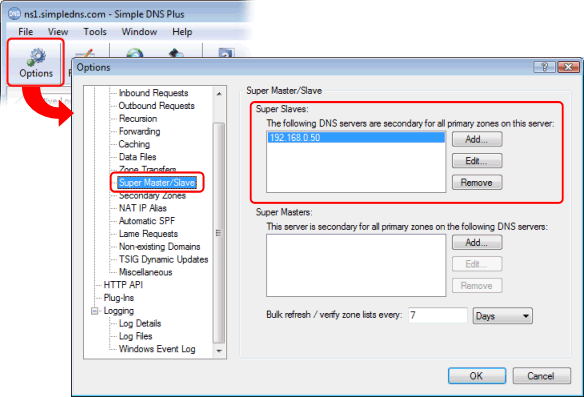

When you see this warning message (on the secondary DNS server), it is because the primary server is not allowing it to zone transfer (download) data for the zone.
The warning message will contain the name of the zone attempted transferred and the IP address of the primary DNS server.
For example:
*** Warning: Failed to Zone Transfer domain.com from 1.2.3.4 (RCODE 5 refused...)
First make sure that the zone name is spelled correctly and matches the name used on the primary server, and make sure that the IP address is the correct address of your primary DNS server.
Next make sure that the primary server allows the IP address of the secondary server to request zone transfers for the zone.
IMPORTANT:
If the computer running your secondary DNS server has multiple IP addresses, then zone transfer requests may not originate from the same IP address as the secondary DNS server is configured to listen for inbound DNS requests on.
You can configure which local IP address is used for outbound requests (including zone transfer requests) in the Options dialog / DNS / Outbound Requests section.
You can check which IP address zone transfer requests originate from simply be looking in the Simple DNS Plus log on the primary server.
On a Simple DNS Plus primary server, there are 3 different settings which can affect zone transfer requests beeing allowed or not:
1) Options dialog / DNS / Zone Transfers:
IP addresses listed here are allowed to request zone transfers for all zones on this server.
2) If you are using the Super Master/Slave function:

IP addresses in the ”Super Slaves” list are allowed to request zone transfers for all primary zones on this server.
3) In the zone properties dialog for each individual zone:

IP addresses specified here will be allowed to request zone transfers for this zone.
The IP address of the secondary DNS server only needs to be included in one of these 3 settings to be allowed to request zone transfers for a zone.